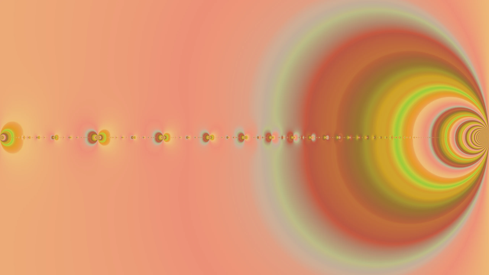
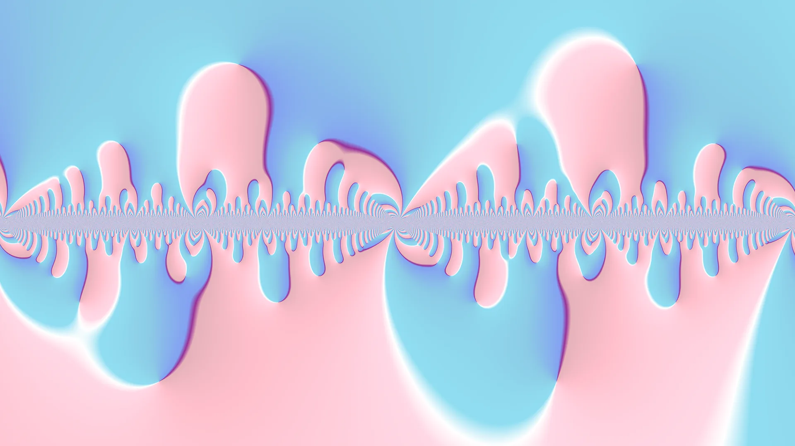
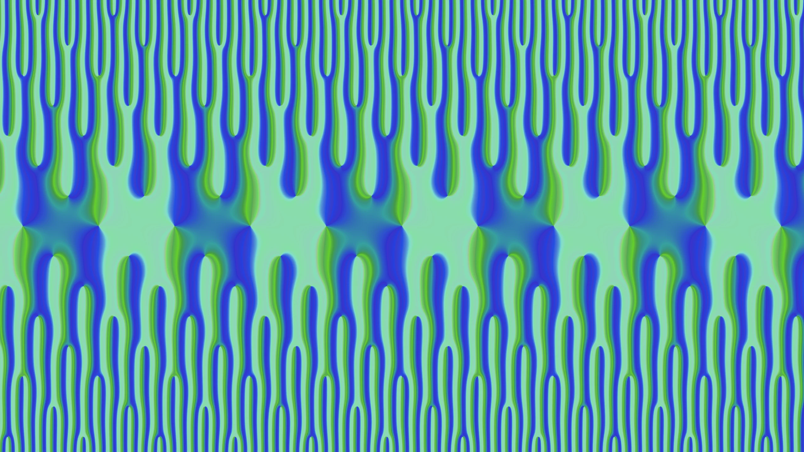

Salvatore Mercuri
Chapman-Schmidt Postdoctoral Fellow
Department of Mathematics, Imperial College London
About

Research
Publications

Speaking
Talks
Recent conferences & workshops

Experience
Chapman-Schmidt Postdoctoral Fellow
Department of Mathematics, Imperial College London
About

Research

Speaking

Experience